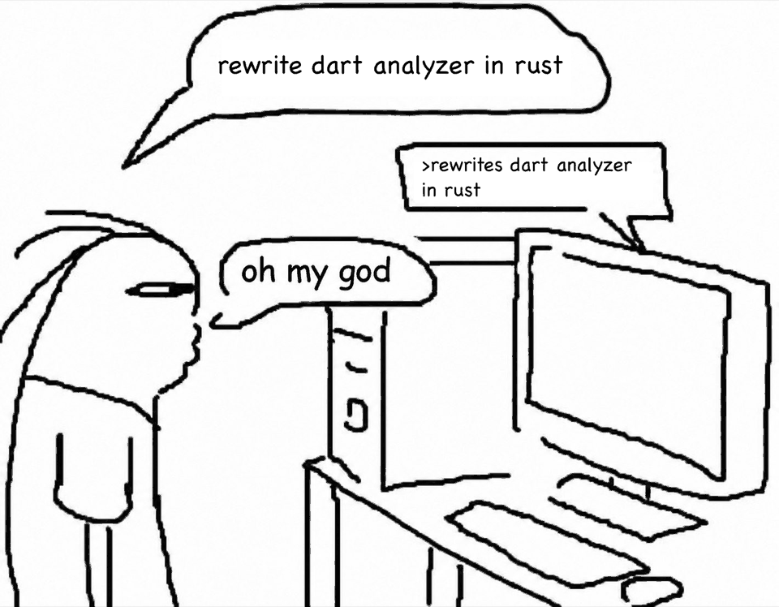

dartr analyze parity
The diagnostics of dart analyze: errors, warnings, lints and analyzer plugins. Same options, output formats (default, machine, json) and exit codes, including --fatal-infos and --fatal-warnings.
Preview · v0.1.0-preview.2 · Dart SDK 3.13.3
dartr follows Dart SDK 3.13.3. It has the commands analyze, format and language-server, with the same options, output formats and exit codes as the Dart tools.
$ brew install orestesgaolin/tap/dartr $ dartr analyze # like `dart analyze` $ dartr format lib # like `dart format` $ dartr language-server # LSP, for editors
01
dartr reads the dart: libraries from the Dart or Flutter SDK on your PATH, so it needs that SDK. Use SDK 3.13.3: dartr copies the behavior of that version.
The diagnostics of dart analyze: errors, warnings, lints and analyzer plugins. Same options, output formats (default, machine, json) and exit codes, including --fatal-infos and --fatal-warnings.
A port of dart_style, the code behind dart format. Tall style and short style. Same output on the dart_style test data and on the corpora. Supports -o and --set-exit-if-changed.
An LSP server. Has diagnostics, outline, closing labels, folding, selection ranges, document symbols, formatting, navigation, references, hover, signature help, semantic tokens, inlay hints, call and type hierarchy and workspace symbols. Completion since v0.1.0-preview.2. Missing: quick fixes, assists, rename.
The legacy analysis server protocol (--protocol=analyzer) is partial: 39 of 59 requests and 19 of 22 notifications. Its completion, quick fixes and refactorings are not done yet.
$ brew install orestesgaolin/tap/dartr $ dartr --version dartr 0.1.0 port of the Dart SDK 3.13.3 analyzer (pinned reference version)
Or download dartr-<version>-<target>.tar.gz from GitHub Releases for aarch64-apple-darwin or x86_64-unknown-linux-gnu, check it against the .sha256 file and extract it. bin/dartr is the binary.
From source (Rust stable, edition 2024): cargo build --release -p dartr.
dart analyze differ, dartr is wrong. Please report it.flutter analyze and IntelliJ start the SDK's own server and have no setting for another one. They do not work with dartr yet.dart analyze today.02
dartr analyze and dart analyze 3.13.3 on the same machine, run one after the other, with the full pipeline (errors, warnings, lints, analyzer plugins). Both report the same diagnostics on all four projects. dartr is faster on three of the four projects and slower on flutter_tools (3.5 s against 2.5 s). Wall time in seconds, lower is better. dart uses its normal disk cache (~/.dartServer). dartr has no disk cache and starts cold every time.
dart analyze, warm disk cachedartr analyze, cold (no cache)dart analyze, empty cache, idle machinedartr: 22.1 s against 76.8 s.
packages/flutter1,309,663 linesdartr: 6.2 s against 15.4 s.
analyzer 9.0.0 (pub)909,249 linesdartr: 1.9 s against 2.5 s.
flutter_tools455,099 linesdartr is slower here: 3.5 s against 2.5 s. The resolved lints add most of its time. That is the first optimization target.
| project | Dart lines | dart analyze | dartr analyze | dart, empty cache, idle |
|---|---|---|---|---|
| Flutter application (pub workspace, analyzer plugins) | 1,559,637 | 76.8 s | 22.1 s | 72.8 s |
Flutter packages/flutter | 1,309,663 | 15.4 s | 6.2 s | 19.6 s |
analyzer 9.0.0 (pub) | 909,249 | 2.5 s | 1.9 s | 7.1 s |
flutter_tools | 455,099 | 2.5 s | 3.5 s | 7.6 s |
Each chart has its own scale. Source: README.md and docs/BENCHMARKS.md.
Caveat. These are single runs from 2026-10-10, made while other processes loaded the machine (Apple M5 Pro, 15 cores). The final comparison on an idle machine is still to come, so treat the numbers as indicative only.
The reference column is a different measurement: hyperfine, mean of 3 runs, isolated --cache directory deleted before each run, on an idle machine on 2026-10-09. It shows what dart analyze costs without its cache. dartr has no cache, so every dartr run is a cold run.
03
Each part of dartr is checked by a differential test against the pinned Dart analyzer 3.13.3. A Dart program (tools/oracle) uses the real package:analyzer and writes JSON Lines. dartr dump writes the same format. difftest runs both and reports the first difference of each file.
diagnostics matched on analyzer 9.0.0 (unseen corpus), 0 extra.
lint diagnostics matched (unseen corpus).
diagnostics on the 1.56 million line app, including the jaspr_lints analyzer plugin.
dartr analyze output on Flutter packages/flutter and flutter_tools.
dart_style tests byte-exact. Also flutter_tools 366/366 and analyzer 9.0.0 456/456 (unseen).
diagnostic codes, with messages equal to Dart.
LSP session steps identical to dart language-server (first LSP milestone). Later LSP features compared on fixtures.
legacy protocol steps identical to dart language-server --protocol=analyzer (39 of 59 requests implemented).
workspace tests at the last merge.
$ dart analyze --format=json > dart.json; echo "dart: $?" $ dartr analyze --format=json > dartr.json; echo "dartr: $?" $ diff <(jq -S . dart.json) <(jq -S . dartr.json)
Differences in output or exit code count as bugs. Open an issue with the smallest Dart file that shows it, the exact command, dartr --version, dart --version and the output of both tools.
04
dartr does not use a cache to be fast: it has no disk cache and links the SDK libraries from source on every run. The time comes from how the work is done. Each point below names the code that does it.
The driver reads, scans and parses all referenced files in parallel waves on a rayon thread pool. It also computes the unlinked data and API signatures of each file there. The parsed unit is kept, so linking does not parse the file again.
A parse-only run shows what this part costs on its own: 1,697 files of Flutter packages/flutter in 142.2 ms, 3,090 files of the 1.56 million line app in 472.0 ms (mean of 10 runs, busy machine). This is a lower bound, not a comparable number.
crates/dartr_driver/src/file_state.rs · docs/BENCHMARKS.md
Libraries are grouped into import cycles. A DAG scheduler on rayon starts linking a cycle as soon as all its direct dependencies are linked, and publishes each linked cycle into an immutable snapshot. Independent cycles link at the same time.
crates/dartr_driver/src/driver.rs · docs/design/semantics.md §2.5
Libraries are analyzed in parallel (par_iter). Inside one library, each file is resolved in parallel with its own arena for local elements and types. Only the library-wide steps (constants, imports verifier, unused elements) run in sequence. Resolution reads linked elements and never changes them, so no locks are needed around elements.
crates/dartr_driver/src/analysis.rs · crates/dartr_resolver/src/library_analyzer.rs
The tokens and AST nodes of a file live in one arena per compilation unit. Nodes are stored per kind in vectors and referenced by 32-bit indices. Resolution results go into side tables indexed by node, so the AST stays read-only and can be shared between threads. Elements use 64-bit ids into per-cycle stores.
crates/dartr_ast/src/arena.rs · crates/dartr_element/README.md
Each type, type list and substitution is stored once in a sharded global interner and referenced by id. Types that mention local elements go into a per-task overlay, so parallel tasks do not write to shared state for them.
crates/dartr_element/src/interner.rs · crates/dartr_element/src/pool.rs
dartr is compiled Rust (release profile with thin LTO). It starts as a native process and loads no Dart VM. Analyzer plugins are the exception: they run out of process and need the Dart SDK.
On the same one-file package, a measurement made for this page on a shared machine: dartr analyze took 0.04 to 0.10 s wall time (3 runs), dart analyze with its warm cache took 0.82 and 1.06 s (2 runs).
Cargo.toml [profile.release] · crates/dartr_plugins/src/lib.rs (the only place that starts dart)
Set DARTR_TIMINGS=1 to print the time of each phase of dartr analyze to stderr: context discovery, the file list and the diagnostics (parse, link, resolve, verifiers, lints).
$ DARTR_TIMINGS=1 dartr analyze . Analyzing .... [timings] contexts 552.041µs, file list 43.5µs (1 files), diagnostics 37.771667ms error - lib/mini.dart:5:14 - A value of type 'int' can't be assigned to a variable of type 'String'. ... warning - lib/mini.dart:5:10 - The value of the local variable 's' isn't used. ... 2 issues found.
A one-file package with two problems, dartr 0.1.0 from Homebrew, 2026-10-10. The diagnostics phase includes linking the dart:core cycle from SDK source. Messages shortened here.
Performance is the next phase of the plan (phase 11). These are the known targets:
dartr analyze on flutter_tools went from 0.7 s to 3.5 s (dart: 2.6 s), and on Flutter from 3.2 s to 5.9 s. Optimization starts here.String), and 130 s for runtimeType on Flutter. Dart has a warm disk index.flutter_tools with the same result as dart analyze in 3.7 s, but used 29.6 s of system CPU time (dart: 2.4 s wall time).05
The first commit is from 2026-10-08 20:04. The first public release, v0.1.0-preview.1, was published on 2026-10-10 at 13:15. AI coding agents wrote the code, and one person directed and reviewed the work.
Ported files keep the structure and names of the Dart code, and each starts with a comment that names its Dart source file. The full log, with the evidence for each merge and a list of incidents, is in docs/TIMELINE.md.

dart language-serverdart_style port and dartr formatOpus8,702 tests byte-exactflutter_tools types 100%, elements 99.84%flutter_tools exactdart analyzeanalyzer 9.0.0 differences fixedOpus27,278/27,278, 0 extra; lints 57,211/57,211v0.1.0-preview.1OpusHomebrew formula; brew test passes06
Dart-Code (the VS Code extension) can only start the analysis server as a Dart script, so dart.analyzerPath points to dartr_shim.dart. The shim starts dartr language-server with the same arguments and forwards stdin, stdout, stderr and the exit code. Homebrew installs the shim with dartr next to it.
$ echo "$(brew --prefix dartr)/libexec/dartr_shim.dart"
{
"dart.analyzerPath": "/opt/homebrew/opt/dartr/libexec/dartr_shim.dart"
}
Use the path that the first command prints. Without Homebrew, set the environment variable DARTR_BIN to the dartr binary for the VS Code process, or put dartr next to the shim. To go back to the Dart server, remove dart.analyzerPath and reload the window. The initialize result has serverInfo.name dartr LSP Analysis Server.
Neovim, Helix, Zed, Emacs and Sublime start a language server command directly. They can run dartr without the shim.
[language-server.dartr]
command = "dartr"
args = ["language-server"]
[[language]]
name = "dart"
language-servers = ["dartr"]
flutter analyze and IntelliJ start <sdk>/bin/dart language-server and have no setting for another server. They do not work with dartr yet.